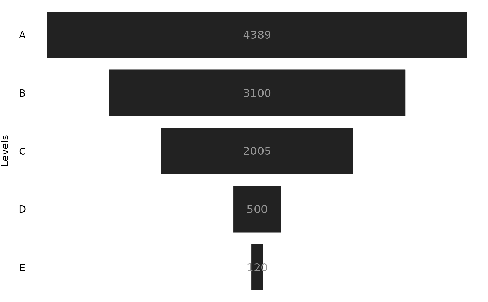

Build a Power BI like funnel chart.
funnel.RdThis function will do its best to build a Power BI like funnel chart.
This function outputs the raw ggplot object that describes the funnel chart.
As a consequence, you have to explicit call the object produced, or, use
functions like print() to visualize the chart.
Arguments
- data
The
data.framewith your data;- values
The column name where are the values you want to display in your funnel chart;
- levels
The column name with the "levels" (or the "groups") you want to display in your funnel chart;
- stat
A string with the stat you want to use to aggregate the data. Defaults to
"sum".- labels
Use
ggplot2::geom_text()to add labels to each rectangle in the chart. Defaults toTRUE.- tile_specs
A list with the values to be used in the options/arguments of the
ggplot2::geom_tile()geom.- text_specs
A list with the values to be used in the options/arguments of the
ggplot2::text_specs()geom.- theme
Accepts a
ggplot2::themeobject from the user to customize the theme of the chart.
Details
In essence, ggfunnel::funnel() uses the ggplot2::geom_tile() geom to
build the funnel chart. Since this is a best attempt, this function also gives you freedom to
change the specifications of the geoms of the plot, in case it does not
perform well. You can change these specifications
by using the tile_specs and text_specs arguments.
These arguments accepts a list with key-value pairs. In each key-value pair
you can define the value you want to use in a specific option/argument of the ggplot2::geom_tile()
and ggplot2::geom_text() geoms, respectively.
You can see the available argument/options that you can set at tile_specs and text_specs
by checking the result of names(ggfunnel::default_tile_specs) and names(ggfunnel::default_text_specs),
respectively.
You can also change the theme elements of the chart by giving a ggplot2::theme object
to the theme argument, with the desired specifications.
The stat argument controls whether you want to aggregate or not your data.
If stat = "sum" or stat = "count", ggfunnel::funnel() will
use sum() or dplyr::count() to aggregate your data. Use stat = "sum"
for numeric data, and stat = "count" for categorical data.
Use stat = "identity" if your data is already aggregated, and you just want to
print the values you have.
Examples
# Using the `ggfunnel::aggregates` data.frame as example:
print(ggfunnel::aggregates)
#> # A tibble: 5 × 2
#> Step N_users
#> <chr> <dbl>
#> 1 A 4389
#> 2 B 3100
#> 3 C 2005
#> 4 D 500
#> 5 E 120
# Ploting a funne chart that shows the distribution of users
# across the different "steps".
plot <- ggfunnel::aggregates |>
ggfunnel::funnel(
values = N_users, levels = Step
)
print(plot)
